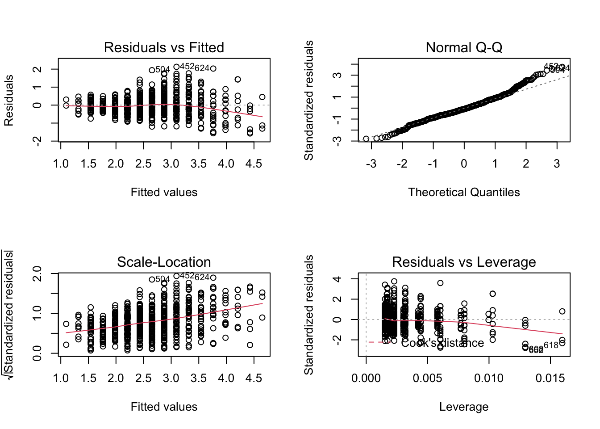

16 Корреляционный анализ
До этого момента мы рассматривали только отдельные переменные и их характерики, однако в практике мы редко работаем только с одной переменной. Как правило, у нас есть многомерное пространство признаков, и нас интересуют взаимосвязи между ними.
16.1 Ковариация
Мы хотим описать имеющиеся взаимосвязи как можно проще и опираясь на то, что у нас уже есть. Мы говорили, что дисперсия, или вариация, заключает в себе информацию об изменчивости признака. Если мы хотим исследовать взаимосвязь между признаками, то логично будет посмотреть, как изменяется один из признаков при изменении другого — иначе говоря, рассчитать совместную изменчивость признаков, или ко-вариацию (covariance).
Как мы её будем считать? Подумаем графически. Расположим две переменные на осях и сопоставим каждому имеющемуся наблюдению точку на плоскости.
КАРТИНКА
Отметим средние значения по обеим переменным.
КАРТИНКА
Заметим, что если наши наблюдения по переменной \(x_1\) отклоняются в большую сторону, то они отклоняются в большую сторону и по переменной \(x_2\). Аналогично, если они будут отклоняться в меньшую сторону по \(x_1\), то в меньшую же сторону они будут отклоняться и по \(x_2\).
КАРТИНКА
Получается, мы можем на основании согласованности отклонений уже заключить о направлении связи. Произведение отклонений по обеим величинам будет положительно, если отклонения сонаправленны. Запишем это математически.
\[ (\bar x_1 - x_{i1}) (\bar x_2 - x_{i2}) > 0 \Leftarrow \big( (\bar x_1 - x_{i1}) > 0 \wedge (\bar x_2 - x_{i2}) > 0 \big) \vee \big( (\bar x_1 - x_{i1}) < 0 \wedge (\bar x_2 - x_{i2}) < 0 \big) \]
Соответственно, если отклонения будут направлены в разные стороны, из произведение будет отрицательным. Ну, осталось только понять, как совместные отклонения организованы в среднем — это и будет ковариацией двух величин:
\[ \mathrm{cov}(X_1, X_2) = \frac{1}{n-1} \sum_{i=1}^n (\bar x_1 - x_{i1}) (\bar x_2 - x_{i2}) \]

Что такое ковариация величины самой с собой (\(\mathrm{cov}(X_1, X_1)\))? Докажите через выведение формулы.
Важно отметить, что ковариация улавливается только линейную составляющую взаимосвязи между признаками, поэтому если \(\mathrm{cov}(X_1,X_2) = 0\), то мы можем сказать, что между переменными нет линейной взаимосвязи, однако это не значит, что между этими переменными нет никакой другой зависимости.
У ковариации есть два важных недостатка:
- это размерная величина, поэтому её значение зависит от единиц измерения признаков,
- она зависит от дисперсий признаков, поэтому по её значению можно определить только направление связи (прямая или обратная), однако ничего нельзая сказать о силе связи.
Поэтому нам нужно как-то модицифировать эту статистику, чтобы мы могли больше вытащить из её значения.
16.2 Корреляция
Раз ковариация зависит от дисперсии, то можно сделать некоторые математические преобразования, чтобы привести эмпирические распределения к какому-то одному виду — сделать так, чтобы они имели одинакое математическое ожидание (среднее) и одинаковую дисперсию. С этой задачей прекрасно справляется стандартизация. Напоминаю формулу:
\[ x_i^* = \frac{x_i - \bar x}{s} \] После такого преобразования математическое ожидание нашего распределения будет равно нуля, а стандартное отклонение — единице. Это избавит нас от влияния дисперсии на значение ковариации. Ковариация двух стандартно нормально распределенных величин называется корреляцией (correlation).
\[ \mathrm{cov}(X_1^*, X_2^*) = \frac{1}{n-1} \sum_{i=1}^n x_{i1}^* x_{i2}^* = \mathrm{corr}(X_1, X_2), \] где \(X_1^*\) и \(X_2^*\) — стандартизированные величины \(X_1\) и \(X_2\) соответственно.
Корреляцию можно выразить через ковариацию:
\[ \mathrm{corr}(X_1, X_2) = \frac{1}{n-1} \sum_{i=1}^n \Big( \frac{\bar x_1 - x_{i1}}{s_1} \Big) \Big( \frac{\bar x_2 - x_{i2}}{s_2} \Big) = \frac{1}{s_1 s_2} \Big( \frac{1}{n-1} \sum_{i=1}^n (\bar x_1 - x_{i1})(\bar x_2 - x_{i2}) \Big) = \frac{\mathrm{cov}(X_1, X_2)}{s_1 s_2} \]
Если внимательно всмотреться в формуле, то можно обнаружить, что корреляция это не что иное, как стандартизированное значение ковариации.
Коэффициент корреляции имеет четкие пределы изменения: \([-1; \,1]\). Крайнее левое значение говорит о том, что присутствует полная обратная линейная взаимосвязь, крайнее правое — что присутствует полная прямая линейная взаимосвязь. Как и ковариация, корреляция ловит только линейную составляющую связи, поэтому нулевое значение корреляци показывает, что между переменными отсутствует линейная взаимосвязь. Это всё еще не значит, что связи нет вовсе.
16.2.1 Тестирование статистической значимости коэффициента корреляции
Оценку коэффициента корреляции мы получаем методом моментов, заменяя истинный момент \(\rho_{ij}\) выборочным \(r_{ij}\):
\[ \hat \rho_{ij} = \overline{\big( (X_{ki} - \bar X_i) (X_{kj} - \bar X_j) \big)} = r_{ij} \]
Если в генеральной совокупности связь между признаками отсутствует, то есть \(\rho_{ij} = 0\), будет ли равен нулю \(r_{ij}\)? Можно с уверенностью сказать, что не будет, так как выборочный коэффициент корреляции — случайная величина. А мы помним, что вероятность принятия случайной величиной своего конкретного значения равна нулю.
Тогда необходимо протестировать статистическую гипотезу:
\[ H_0: \rho_{ij} = 0 \; \text{(линейной связи нет)} \\ H_1: \rho_{ij} \neq 0 \text{(наиболее частый вариант альтернативы)} \]
Для проверки нулевой гипотезы используется следующая статистика:
\[ t = \frac{r_{ij}}{\sqrt{\frac{1 - r^2_{ij}}{n-2}}} \overset{H_0}{\thicksim} t(\nu = n-2) \]
Вывод о статистической значимости коэффициента корреляции делается согласно алгоритму тестировния статистических гипотез.
16.2.2 Доверительный интервал для коэффициента корреляции
С построением интервальной оценки коэффциента корреляции возникают некоторые сложности. Наша задача состоит в том, чтобы определить в каких границах будет лежать значение истинного коэффициента корреляции с заданной вероятностью:
\[ \mathrm{P} (\rho_{ij,\min} < \rho_{ij} < \rho_{ij,\max}) = \gamma \]
Нам необходимо найти статистику, закон распределения корой известен, однако ранее упомянутся статистика не подходит, так как она имеет распределение Стьюдента, когда верна нулевая гипотеза об отсутствии связи. Если же мы строим интервальную оценку, нас интересует случай наличия связи.
Такую статистику искали долго, и её удалось найти, когда ввели определённое преобразование выборочного критерия корреяции — z-преобразования Фишера:
\[ z(r_{ij}) = \frac{1}{2} \ln \frac{1 + r_{ij}}{1 - r_{ij}} \thicksim \mathrm{N}(\bar z_{ij}, \tfrac{1}{n-3}), \] где \(n\) — объём выборки, а \(\bar z_{ij}\) получается расчётом по указанной формуле после подставления точечной оценки коэффициента корреляции.
Тогда интервальная оценка для величины \(z_{ij, \mathrm{true}}\) приобретает такой вид:
\[ \mathrm{P} \Big( \bar z_{ij} - t_\gamma \sqrt{\tfrac{1}{n-3}} < z_{ij, \mathrm{true}} < \bar z_{ij} + t_\gamma \sqrt{\tfrac{1}{n-3}} \Big) = \gamma = \Phi(t_\gamma) \]
Далее путём обратного преобразования получаются значения границ интервала \((\rho_{ij,\min}, \; \rho_{ij,\max})\).
16.3 Ковариация и корреляция в R
Запасёмся данными. По ссылке скачается экселька.
## tibble [906 × 39] (S3: tbl_df/tbl/data.frame)
## $ SEX : num [1:906] 1 2 2 2 2 2 2 1 2 2 ...
## $ AGE : chr [1:906] "32" "22" "21" "15" ...
## $ MCA : num [1:906] NA NA 1 NA NA NA NA NA NA 1 ...
## $ MMA : num [1:906] NA NA NA NA NA NA NA NA NA NA ...
## $ MCI : num [1:906] NA NA NA NA NA NA NA NA NA NA ...
## $ MMI : num [1:906] NA NA NA 1 NA NA NA NA NA NA ...
## $ WCA : num [1:906] NA NA NA NA 1 NA NA NA NA NA ...
## $ WMA : num [1:906] 1 NA NA NA NA 1 NA NA NA NA ...
## $ WCI : num [1:906] NA NA NA NA NA NA NA NA NA NA ...
## $ WMI : num [1:906] NA NA NA NA NA NA 1 NA NA NA ...
## $ MX : num [1:906] NA NA NA NA NA NA NA 1 NA NA ...
## $ WX : num [1:906] NA 1 NA NA NA NA NA NA 1 NA ...
## $ sex_k : num [1:906] 2 2 1 1 2 2 2 2 2 1 ...
## $ intention : num [1:906] 2 2 2 1 2 2 1 2 2 2 ...
## $ victim : num [1:906] 2 2 1 2 1 2 2 2 2 1 ...
## $ CG : num [1:906] 0 2 0 0 0 0 0 1 2 0 ...
## $ DP : num [1:906] 2 1 5 3 1 1 3 1 1 2 ...
## $ GRa : num [1:906] 1 3 5 1 1 5 2 1 4 5 ...
## $ GRb : num [1:906] 1 3 5 2 1 4 1 1 3 6 ...
## $ GRc : num [1:906] 1 3 2 3 1 2 1 1 2 1 ...
## $ GR_average : num [1:906] 1 3 4 2 1 ...
## $ ARa : num [1:906] 1 2 3 1 2 4 4 1 2 3 ...
## $ ARb : num [1:906] 1 2 2 3 1 1 1 1 2 1 ...
## $ ARc : num [1:906] 1 2 1 4 1 1 1 1 2 1 ...
## $ AR_average : num [1:906] 1 2 2 2.67 1.33 ...
## $ SRa : num [1:906] 1 5 5 1 2 4 2 1 3 2 ...
## $ SRb : num [1:906] 1 4 4 1 2 5 1 1 3 3 ...
## $ SRc : num [1:906] 1 4 5 2 2 2 1 1 4 4 ...
## $ SR_average : num [1:906] 1 4.33 4.67 1.33 2 ...
## $ DHa : num [1:906] 3 1 5 3 1 5 1 1 3 2 ...
## $ DHb : num [1:906] 1 1 2 2 1 2 1 1 2 2 ...
## $ DHc : num [1:906] 1 1 5 4 1 2 3 1 4 2 ...
## $ DHd : num [1:906] 1 1 1 2 1 1 1 1 1 2 ...
## $ DHe : num [1:906] 2 4 5 2 2 1 2 1 3 1 ...
## $ DHf : num [1:906] 1 1 1 2 1 1 3 1 3 1 ...
## $ DHg : num [1:906] 1 1 2 4 1 4 5 1 1 1 ...
## $ DHh : num [1:906] 1 4 7 5 4 4 6 1 4 5 ...
## $ animal_average : num [1:906] 1.75 2.5 5.5 3.5 2 3 3 1 3.5 2.5 ...
## $ machine_average: num [1:906] 1 1 1.5 2.5 1 2 2.5 1 1.75 1.5 ...Это данные исследования на тему дегуманизации убийц. Нас будут интересовать следующие шкалы:
- DPa — шкала «одобрения казни»
- Шкала морального возмущения:
- GR_average — подшкала отвращения
- AR_average — подшкала гнева
- SR_average — подшкала презрения
- Шкала дегуманизации:
- animal_average — анималистическая дегуманизация
- machine_average — механистическая дегуманизация
Ковариация считается так:
## [1] 1.567469А корреляция так:
## [1] 0.7363325Ещё мы можем построить соответствующий график, чтобы отобразить закономерность — диаграмма рассеяния с линией тренда:
## ── Attaching packages ─────────────────────────────────────── tidyverse 1.3.0 ──## ✓ ggplot2 3.3.2 ✓ purrr 0.3.4
## ✓ tibble 3.0.4 ✓ dplyr 1.0.2
## ✓ tidyr 1.1.2 ✓ stringr 1.4.0
## ✓ readr 1.4.0 ✓ forcats 0.5.0## ── Conflicts ────────────────────────────────────────── tidyverse_conflicts() ──
## x dplyr::filter() masks stats::filter()
## x dplyr::lag() masks stats::lag()dehum %>% ggplot(aes(GR_average, AR_average)) +
geom_point() +
geom_smooth(method = 'lm') # мы заинтересованы в отображении линейного компонента связи## `geom_smooth()` using formula 'y ~ x'
Но это мы всё получали выборочные оценки коэффициентов. А как же тестировать гипотезы?
Легко и непринужденно! Просто дописать test в название функции:
##
## Pearson's product-moment correlation
##
## data: dehum$GR_average and dehum$AR_average
## t = 32.72, df = 904, p-value < 2.2e-16
## alternative hypothesis: true correlation is not equal to 0
## 95 percent confidence interval:
## 0.7050124 0.7647859
## sample estimates:
## cor
## 0.7363325Что мы наблюдаем в аутпуте? Значение t-статистики, число степеней свободы, p-value для значения t-статистики, а также 95% доверительный интервал для коэффициента корреляции. Всё, что мы и хотели — за одну команду!
16.3.1 Коэффициенты корреляции для разных шкал
Дла разных шкал разработаны разные коэффициенты корреляции. Оценки коэффициентов будут рассчитываться по-разному, но логика тестирования статистических гипотез остаётся одинаковой.
| Переменная \(X\) | Переменная \(Y\) | Мера связи |
|---|---|---|
| Интервальная или отношений | Интервальная или отношений | Коэффициент Пирсона |
| Ранговая, интервальная или отношений | Ранговая, интервальная или отношений | Коэффициент Спирмена |
| Ранговая | Ранговая | Коэффициент Кенделла |
В функциях cor() и cor.test() требуемый коэффициент задаётся черед аргумент method:
##
## Kendall's rank correlation tau
##
## data: dehum$DP and dehum$animal_average
## z = 9.5138, p-value < 2.2e-16
## alternative hypothesis: true tau is not equal to 0
## sample estimates:
## tau
## 0.2463616.4 Частный и множественный коэффициент корреляции
Если у нас два признака, то с ними всё достаточно понятно. А если признаком много? Тогда у нас могут быть сложные взаимосвязи, и возможен такой случай, что некоторый признак оказывает связан как с одним, так и с другим из интересующих нас. Таким образом, мы можем наблюдать ложную корреляцию. Чтобы избавиться от влияния сторонних признаков, используюся частные коэффициенты корреляции.
Функция cor() может возвращать не только оценку одного коэффициента корреляции, но и корреляционную матрицу, отобрадающую связи всех признаков со всеми. Например, продолжим работать со шкалой морального возмущения и изучим взаимосвязи внутри неё:
## GR_average AR_average SR_average
## GR_average 1.0000000 0.7363325 0.607245
## AR_average 0.7363325 1.0000000 0.630688
## SR_average 0.6072450 0.6306880 1.000000В корреляционной матрице на главной диагонали стоят единицы, отражающай связь переменной в самой собой — разумеется, она будет абсолютно линейная.

А как посчитать ковариационную матрицу?
В общем виде корреляционная матрица имеет следующий вид:
\[ R = \begin{pmatrix} 1 & r_{12} & \dots & r_{1p} \\ r_{12} & 1 & \dots & r_{2p} \\ \vdots & \vdots & \ddots & \vdots \\ r_{p1} & r_{p2} & \dots & 1 \end{pmatrix} \]
Матрица, как можно заметить, симметрична относительно главной диагонали, так как \(r_{ij} = r_{ji}\).
Её можно визуализироать, например, так:

Но можно и усовершенствовать визуализацию, отобразив сами значения:

На основе этой матрицы мы можем протестировать статистическую значимость каждого из коэффициентов (не забыв про поправки на множественные сравнения!):
cor_tests <- correlation::correlation(
dehum %>%
select(GR_average, AR_average, SR_average),
method = "spearman", # указываем, какой коэффициент нам нужен
adjust = "holm" # и какую поправку будем использовать
)
cor_tests## # Correlation table (spearman-method)
##
## Parameter1 | Parameter2 | rho | 95% CI | S | p
## --------------------------------------------------------------------
## GR_average | AR_average | 0.71 | [0.67, 0.74] | 3.65e+07 | < .001***
## GR_average | SR_average | 0.60 | [0.55, 0.64] | 4.99e+07 | < .001***
## AR_average | SR_average | 0.67 | [0.63, 0.70] | 4.13e+07 | < .001***
##
## p-value adjustment method: Holm (1979)
## Observations: 906Чтобы перенести их на график, нам нужно получить матрицу из p-значений:
p_values <- corrplot::cor.mtest(dehum %>%
select(GR_average, AR_average, SR_average), adjust = 'holm')$pdehum %>%
select(GR_average, AR_average, SR_average) %>%
cor() %>%
corrplot::corrplot(type = 'upper',
p.mat = p_values,
sig.level = 0.05)
Ну, у нас ничего не поменялось, так как коэффициенты все оказались значимы. Эх…
Но вот для примера на одно из встроенных датасетов:
corrplot::corrplot(
cor(mtcars),
type = "upper",
p.mat = corrplot::cor.mtest(mtcars)$p,
sig.level = 0.01
)Итак, возвращается к частному коэффициенту корреляции. Он определяется так:
\[ r_{ij, J(i,j)} = - \frac{A_{ij}}{\sqrt{A_{ii} A_{jj}}}, \]
где \(A\) — алгебраическое дополнение.
В общем виде это осознать сложно, поэтому давайте на примере трёх признаков.
\[ R = \begin{pmatrix} 1 & r_{12} & r_{13} \\ r_{21} & 1 & r_{23} \\ r_{31} & r_{32} & 1 \end{pmatrix} \]
\[ r_{12,3} = \frac{r_{12} - r_{13} \cdot r_{23}}{\sqrt{(1 - r^2_{23})(1-r^2{13})}} \]
\[ H_0: \rho_{12,3} = 0 \\ H_1: \rho_{12,3} \neq 0 \\ t = \frac{r_{12,3} \sqrt{n-3}}{\sqrt{1 - r^2_{12,3}}} \overset{H_0}{\thicksim} t(\nu = n-3) \]
Но слава богу, что в R это все делается в одну строку:
## $estimate
## GR_average AR_average SR_average
## GR_average 1.0000000 0.5730882 0.2720509
## AR_average 0.5730882 1.0000000 0.3414418
## SR_average 0.2720509 0.3414418 1.0000000
##
## $p.value
## GR_average AR_average SR_average
## GR_average 0.000000e+00 3.948903e-80 8.051918e-17
## AR_average 3.948903e-80 0.000000e+00 3.811050e-26
## SR_average 8.051918e-17 3.811050e-26 0.000000e+00
##
## $statistic
## GR_average AR_average SR_average
## GR_average 0.000000 21.01453 8.495546
## AR_average 21.014531 0.00000 10.916353
## SR_average 8.495546 10.91635 0.000000
##
## $n
## [1] 906
##
## $gp
## [1] 1
##
## $method
## [1] "pearson"## estimate p.value statistic n gp Method
## 1 0.5730882 3.948903e-80 21.01453 906 1 pearsonХорошо, а если нас интересует связь одного признака с несколькими сразу? Тогда нам нужен множественный коэффициент корреляции. Он также вычисляется на основе корреляционной матрицы и определяется следующим образом. Пусть нас интересует связь первого признака со всеми остальными:
\[ R_1 = \sqrt{1 - \frac{\det R}{A_{11}}} \]
Квадрат множественонго коэффициента корреляции называется коэффициентом детерминации1. Он показывает, во-первых, степень тесноты связи данного признака со всеми остальными, но, кроме того, ещё и долю дисперсии данного признака, определяемую вариацией все остальных признаков, включенных в данную корреляционную модель.
Мы подробнее его изучим в следуюшей теме, а также увидим, где нам его найти, чтобы не считать руками.
16.5 Другие корреляции
Можно коррелировать не только количественные и ранговые шкалы между собой, но и качественные тоже:
| Переменная \(X\) | Переменная \(Y\) | Мера связи |
|---|---|---|
| Дихотомическая | Дихотомическая | \(\phi\)-коэффициент |
| Дихотомическая | Ранговая | Рангово-бисериальный коэффициент |
| Дихотомическая | Интервальная или отношений | Бисериальный коэффициент |
16.5.1 \(\phi\)-коэффициент
Этот коэффициент позволяет рассчитать корреляцию между двумы дихотомическими шкалами. Он основан на расчёте статистики \(\chi^2\).
По двум дихотомическим переменным можно построить таблицу сопряженности. Разберемся на котиках и пёсиках:
cats_n_dogs <- read_csv('https://raw.githubusercontent.com/angelgardt/hseuxlab-wlm2021/master/book/wlm2021-book/data/cats_n_dogs.csv')##
## ── Column specification ────────────────────────────────────────────────────────
## cols(
## id = col_double(),
## species = col_character(),
## size = col_character()
## )##
## big small
## cat 17 8
## dog 16 9По данной таблице можно рассчитать критерий согласия Пирсона (\(\chi^2\)):
##
## Pearson's Chi-squared test with Yates' continuity correction
##
## data: table(cats_n_dogs$species, cats_n_dogs$size)
## X-squared = 0, df = 1, p-value = 1Сам хи-квартар тестирует гипотезу о том, что между двумя категориальными переменными те связи. Он это делает путём сравнения теоретической и эмпирической таблицы частот.
Эмпирическую таблицу частот мы получаем по результатам наблюдений (то, что мы делаем с помощью функции table()):
| \(X_1\) | \(X_2\) | |
|---|---|---|
| \(Y_1\) | \(p_{X_1,Y_1} = a\) | \(p_{X_2,Y_1} = b\) |
| \(Y_2\) | \(p_{X_1,Y_2} = c\) | \(p_{X_2,Y_2} = d\) |
Далее вычисляются теоретические частоты:
| \(X_1^*\) | \(X_2^*\) | |
|---|---|---|
| \(Y_1^*\) | \(\frac{a+b}{N}\) | \(\frac{b+a}{N}\) |
| \(Y_2^*\) | \(\frac{c+d}{N}\) | \(\frac{d+c}{N}\) |
где \(N = a + b + c + d\).
Затем считаются расхождения частот, которые суммируются и получается статистика \(\chi^2\):
\[ \chi^2 = \sum_{i,j} \frac{p_{X_i,Y_j} - p_{X_i^*,Y_j^*}}{p_{X_i^*,Y_j^*}} \]
Статистика подчиняется распределению \(\chi^2\), и чем больше значение этой статистики, тем сильнее связаны признаки. В нашем случае мы получили значение 0, что говорит о абсолютном отсутствии связи между видом животного и его размером.
Но по значению \(\chi^2\) сложно что-то сказать о силе связи, поэтому его нормируют следующим образом, чтобы получить значения от 0 до 1, которые можно интерпретироват аналогично коэффициенту корреляции:
\[ \phi = \sqrt{\frac{\chi^2}{N}} \]
## X-squared
## 0Так как в нашем случае значение \(\chi^2\) было 0, то и коэффициент \(\phi\) мы получили 0.
16.5.2 Бисериальный коэффициент корреляции
Этот коэффициент используется для вычисления корреляции между количественной (\(y\)) и категориальной (\(x\)) шкалой и рассчитывается следующим образом:
\[ r = \frac{\bar x_1 - \bar x_2}{s_y} \sqrt{\frac{n_1 n_2}{N(N-1)}}, \] где \(\bar x_1\) — среднее по элементам переменной \(y\) из группы \(x_1\), \(\bar x_2\) — среднее по элементам \(y\) из группы \(x_2\), \(s_y\) — стандартное отклонение по переменной \(y\), \(n_1\) — число элементов в группе \(x_1\), \(n_2\) — число элементов в группе \(x_2\), \(N\) — общее число элементов.
Важно отметить, что несмотря на то, что значение коэффициента может быть как положительным, так и отрицательным, это не влияет на интерпретацию. Это одно из исключений из общего правила.
В R его можно вычислить так:
## [1] -0.0140614416.5.3 Рангово-бисериальный коэффициент корреляции
Если у нас не количественная, а ранговая шкала, то применяется рангово-бисериальный коэффициент:
\[ r = \frac{2(\bar x_1 - \bar x_2)}{N}, \] где \(\bar x_1\) — средний ранг в группе \(x_1\), \(\bar x_2\) — средний ранг в группе \(\x_2\), \(N\) — общее количество наблюдений.
## [1] 0.0530944Вы точно видели это словосочетание, когда сталкивались с линейной регресией.↩︎